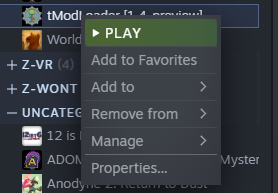
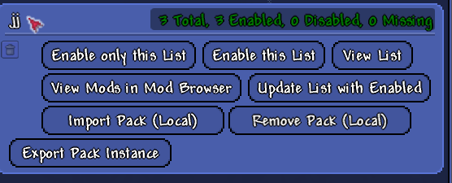

装了一年多 tModLoader，我对泰拉瑞亚的耐心被它彻底改写了
从第一次尝试装模组怕毁存档，到现在把它当成泰拉瑞亚的另一个本体——说说这一年多的真实使用感受和那些慢慢才暴露出来的问题。
去年这个时候我把 tModLoader官网 上的最新版装上了。起因很简单：原版泰拉瑞亚打到月亮事件之后，朋友给我看了一段瑟银模组的 Boss 战视频，画面里发光蘑菇群系藏着一只我从没见过的大家伙。我当时想，这游戏还能长出这种东西？
当初为什么装，以及第一次启动的傻事
其实装之前我纠结了好几天。存档会不会废？卸载之后原版还能玩吗？这些问题后来都有明确答案——不会、能。但那时候没有，只能硬着头皮去官方下载拿安装包。
第一次启动 tModLoader，它弹出一个对话框问要不要把原版角色复制过来。我选了是，然后发现它问的其实是「复制」不是「迁移」——原文件原地不动，模组版里多了一份。这个设计后来我才意识到有多重要：半年前有个模组包把我的世界搞坏了，直接删模组版存档、回原版继续玩，两分钟搞定。
变化三连：越用越顺手的、越用越烦的、离不开的
越用越顺手的：模组管理器的「重载」按钮
刚装的时候每次改模组配置都要退出游戏、重进，等个二三十秒。后来才发现模组管理器界面里有个重载按钮，不用退出就能让新模组生效。这个小细节当初教程里没提，我是在某个社区帖子里看到的——从此它成了我每周至少按十次的按钮。

还有手动装模组这件事。我一开始以为所有模组都能在创意工坊找到，直到有一次想装一个作者只在 GitHub 发布的测试版。按tmodloader文档的指引找到 Mods 文件夹、把 .tmod 文件扔进去、重载，三步搞定。Windows 上那个路径我现在已经能背下来了：文档\My Games\Terraria\tModLoader\Mods。
越用越烦的：更新与兼容的拉锯
tModLoader 本身更新频率不高，但模组作者们更活跃。最烦的不是 tModLoader 更了某个模组跟不上，而是反过来——某个模组作者更了新内容，结果你的 tModLoader 版本太旧装不上，要升级 tModLoader，升级之后又发现另一个你常用的模组还没适配新版本。
说个反直觉的：稳定分支比 beta 分支更省心。我之前追过一次 beta，结果三个月里有两次更新直接让我那套模组包全废了，回退版本花了一下午。现在老老实实待在默认稳定分支，想尝鲜就单独开一个新的模组包试。
离不开的：模组包机制 + 存档复制
模组包这个功能我大概用了三个月才真正理解它的价值。之前换电脑、重装系统，都是手动从创意工坊逐个下载模组。现在点一下保存模组包文件，到新机器上导入，几秒钟还原整套配置。
存档复制更不用说了。我现在同时维护三套存档：原版一个、灾厄模组一个、瑟银模组一个，完全独立、互不影响。这是当初没料到的——装之前我以为 tModLoader 就是给原版加几行代码，没想到它把整个存档体系都独立出来了。
至于那些本来以为会每天用、结果碰都没再碰的功能：模组开发工具链。tModLoader 自带的开发环境我只启动过一次，打开 Visual Studio 看了一眼模板代码就关了。不是不好用，是我确实没那耐心写模组——能玩就够了。
观感修正：当初的两个判断变了
装之前我高估了「巨型模组越多越好」这件事。一开始我灾厄、瑟银、法狗灵魂三个一起开，结果前三个月里有一半时间在查崩溃日志。模组太多内存吃紧是有道理的——两个大型内容模组叠在一起，光加载就要两三分钟，玩到中后期掉帧掉到没法看。社区说的「主线只选一个」不是保守建议，是血泪经验。
装之前我低估了「轻量效率模组」的价值。Magic Storage 统一存储、Recipe Browser 查配方、Boss Checklist 列进度——这几个模组现在我连原版都想开着玩。它们不改变游戏内容，但把翻箱子、翻 Wiki 这种重复劳动砍到了零。

去留结论
不会卸载。tModLoader 已经不是原版泰拉瑞亚的一个附加组件，而是我玩泰拉瑞亚的默认方式。原版偶尔回去打两局，但超过两小时不装模组就开始觉得手痒。
什么信号出现我会考虑换掉？两种可能：一是泰拉瑞亚 1.5 出了官方模组支持，tModLoader 不再有存在意义；二是未来某个 tModLoader 大版本更新，强制要求所有模组升级而我那套模组包的作者集体弃坑了。除此之外没有理由。
最后说句实在的，这东西不像一个「软件」，更像一扇门。装之前你玩的是一款游戏，装之后你玩的是整个社区给这款游戏做的另一个版本。这篇文章里提到的手动装模组、模组包管理这些心得，我顺手整理到了 GitHub、Gitee、GitCode 三个仓库，不同平台选方便的那份就行。